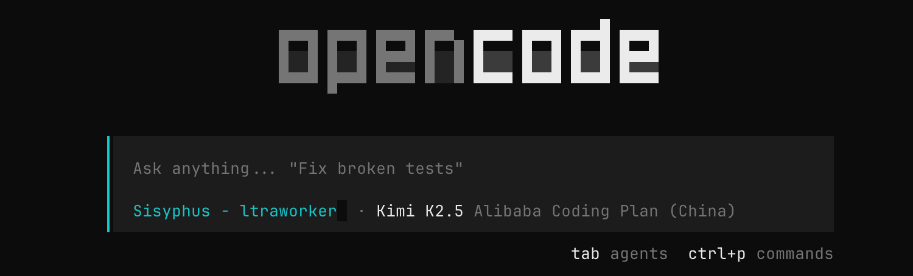
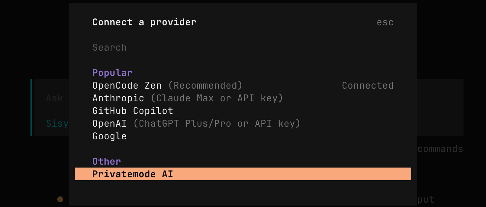
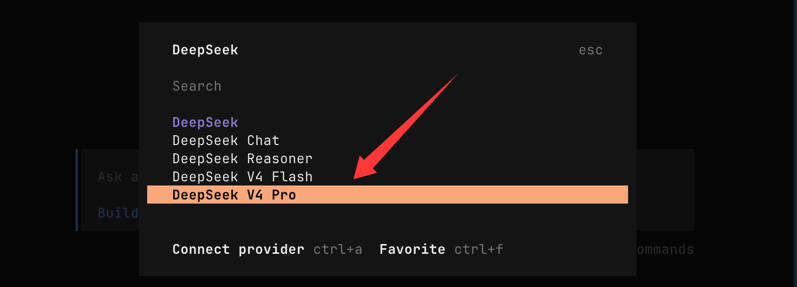
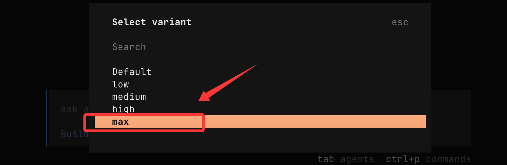
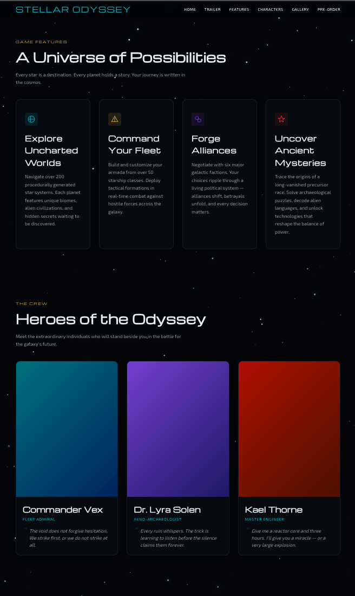

OpenCode integración con DeepSeek
OpenCode es un asistente de programación con IA de código abierto que admite ejecutarse en múltiples entornos, como terminales y páginas web.
En esta sección configuraremos DeepSeek como su backend de IA, para obtener una potente asistencia inteligente en la programación.
Descarga e instalación de OpenCode
Primero, visita la página oficial de descarga de OpenCode según tu sistema operativo.https://opencode.ai/zh/download, obtenga el paquete de instalación o el script de instalación:
Para evitar problemas de compatibilidad causados por diferencias de versión, recomendamos encarecidamente actualizar OpenCode a la última versión y asegurarse de que el número de versión sea ≥ v1.14.24.
La forma más sencilla de instalar y actualizar es mediante un comando de instalación con un solo clic:
curl -fsSL https://opencode.ai/install | bash
Después de la instalación, puede ejecutar el siguiente comando en la terminal para verificar la versión:
opencode --version
Si la versión mostrada es inferior a v1.14.24, descargue nuevamente la última versión para realizar una instalación de sobrescritura.
Ejecutar y configurar DeepSeek
Una vez iniciado OpenCode, puedes conectarte rápidamente a DeepSeek a través de la interfaz de línea de comandos integrada.
Información básica necesaria:
API key： https://platform.deepseek.com/api_keysSolicitar claves API.
BASE_URL: La URL para las solicitudes de API eshttps://api.deepseek.com/anthropic。
1. Iniciar OpenCode
Ingrese al directorio del proyecto (por ejemplo:cd runoob-opencode-test), y ejecute directamente en la terminal:
opencode
En este momento entrarás en la interfaz interactiva de OpenCode.

2、Activar el modo de configuración de conexión
En el campo de entrada de OpenCode, escribe el siguiente comando y presiona Enter:
/connect
El sistema entrará en el proceso de configuración de conexión y te pedirá que elijas el proveedor de modelos de IA.

3. Selecciona como proveedor a DeepSeek.
Cuando aparezca la lista de proveedores, escribe deepseek y confirma la selección.
4. Introduce la API Key de DeepSeek
A continuación, debes ingresar la API Key de DeepSeek. Puedes solicitarla y obtener tu clave exclusiva desde la plataforma abierta de DeepSeek.
Por favor, ingrese la clave de API de DeepSeek: sk-xxxxxxxxxxxxxxxxxxxxxxxx

Se recomienda guardar la API Key en un lugar seguro de antemano y tener cuidado de no filtrarla.
5. Seleccionar el modelo
En la lista de modelos compatibles, selecciona DeepSeek-V4-Pro para completar la configuración.

Configuración de intensidad máxima de pensamiento max:

Una vez completada la configuración, todas las solicitudes de IA iniciadas a través de OpenCode utilizarán el modelo DeepSeek-V4-Pro que hayas especificado para generar respuestas. Podrás experimentar de inmediato la eficiencia y la inteligencia que DeepSeek aporta en los escenarios de programación.
En este punto, hemos integrado con éxito DeepSeek en OpenCode.
Prueba de instancia
Ingrese al directorio del proyecto
cd runoob-opencode-test
Iniciar OpenCode:
opencode
Ingrese el prompt:
Genera una página de destino (landing page) profesional de nivel empresarial para [promoción de juegos]. Añade elementos interactivos y efectos de animación, y asegúrate de que la página tenga un diseño totalmente responsive. Sorpréndeme, da rienda suelta a tu creatividad y completa esta tarea paso a paso.

Al ver el efecto, es bastante bueno:

Otras extensiones